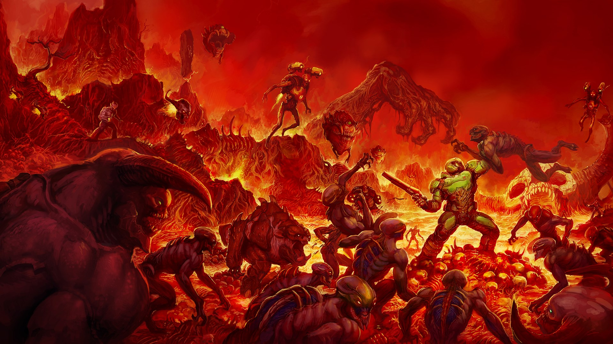
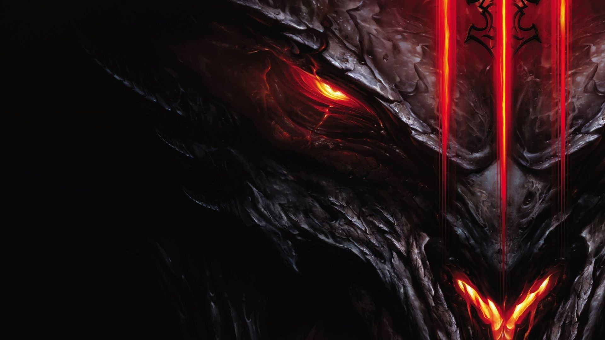
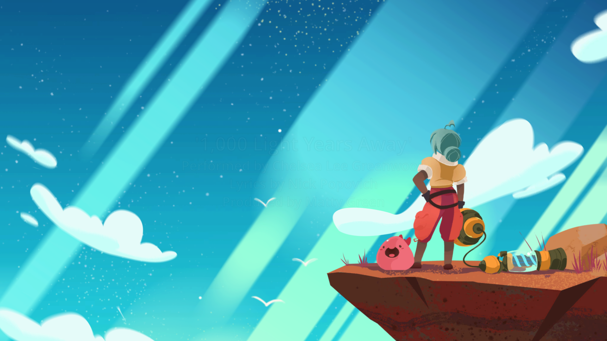

Juegos
DOOM ETERNAL
DIABLO III
ZELDA
SLIME RANCHER
Tienda
Noticias
Multimedia
Fotos
Vídeos
s
Los ejercitos del infierno han invadido la Tierra. Ponte en la piel del Slayer en una epica historia para un jugador y cruza dimensiones para detener la destruccion definitiva de la humanidad.
No le tienen miedo a nada... salvo a ti.

El mal impera
Han pasado veinte años desde que los Demonios Mayores fueran derrotados y expulsados del mundo de Santuario. Ahora debes volver al origen de todo, Tristán, para investigar los rumores sobre una estrella caída: la primera señal de la reencarnación del mal, un augurio de que el Final de los Tiempos ha comenzado.

Entra en un maravillos mundo de la mano de nuestro heroe Link, que tendra que derrotar al mal que azota el reino de Hyrule y ayudar a la princesa Zelda.
Sin reino. Sin recuerdos. Después de un letargo que ha durado 100 años, Link se despierta solo en un mundo que ya no recuerda. Ahora, el héroe legendario debe explorar ese extenso y misterioso mundo y recuperar sus recuerdos antes de que Hyrule esté perdido para siempre.
Armado únicamente con lo que encuentre a su paso, Link emprenderá una aventura para buscar respuestas y obtener los recursos que necesita para sobrevivir.
Slime Rancher es la historia de Beatrix LeBaeu, una valerosa y joven granjera que se abre camino a miles de años luz de la Tierra en la zona de "Más, Más Allá", donde trata de hacer ganaderia de slimes. Con su actitude de "yo puedo", mucha arena, y su confiable mochila aspiradora, Beatrix intenta mantener la calma, amasar una fortuna, y evitar los continuos peligros que ruedan y se avalanzan desde cada esquina.
